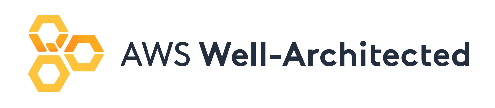
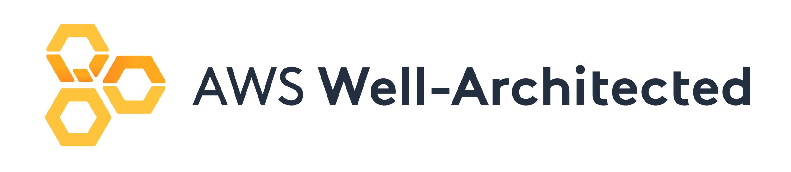

We give agencies peace of mind with enterprise-grade security designed for sensitive mission information.
Our organization and platform are SOC 2 compliant, and our cloud infrastructure uses
modern security controls to protect against unauthorized access and data breaches
so your operational, case, and personnel data stay secure.
Safety Drone
 


SafetyDrone provides a single system where first responders can track all UAS assets—drones, batteries, payloads, and support equipment. Flight hours and cycles are automatically accumulated to drive maintenance schedules, sending proactive alerts before inspections or service is due. Safety Drone
Our graphical drone geometry schema gives teams a common language to identify parts without serial numbers (such as the "third arm" or a specific motor), making it easy to describe recurring issues. At the same time, we track each operator’s hours and currency, with a quick view of total experience and the last 90 days of flying to help monitor pilot proficiency. Safety Drone
SafetyDrone lets you build custom pre-flight, post-flight, and maintenance checklists, plus risk assessment forms that match your agency’s SOPs. You can also upload authorizations, COAs, waivers, and other documents directly into the platform so your workflow—from planning through debrief—stays consistent and audit-ready. Safety Drone
We are continually expanding the library of public safety–specific templates based on user feedback, making standardized documents available to all customers. All operations and supporting documents can be exported in multiple formats, and preset or customizable reports provide detail on flights, operators, maintenance, and more—from case-level hours to monthly or quarterly program summaries. Our reporting supports major regulatory bodies (FAA, CAA, CASA, CAD, EASA, DGAC, TBST), and is updated as rules evolve. Safety Drone


SafetyDrone includes mission planning tools for events and pre-planned operations, as well as fast, simple logging for time-critical incidents. Allocate pilots and equipment in advance, review airspace, and record required approvals before launch, then link completed flights to those plans for a full mission history. Safety Drone
We support a wide range of telemetry types so you can visualize flight paths with precise 3D playback. As your fleet evolves, chances are your new hardware will still be supported. All related missions, flights, documents, incidents, and locations are organized into case folders, giving you a single view of each incident for internal review, public records requests, and inter-agency collaboration. Safety Drone
The Inspection module lets you build inspection schedules based on manufacturer recommendations or department policy and see maintenance status across the entire fleet at a glance. Safety Drone
Get notifications when inspection tasks are due, and track part serial numbers, component lifespans, and replacement history. SafetyDrone helps you manage all drone and equipment maintenance actions centrally so you can prove airworthiness and support a culture of safety in your UAS program. Safety Drone
SafetyDrone allows you to display detailed personnel dashboard.
Manage and monitor pilot currency. Store and track documents (pilot, organization). Share information within the organization.
Manage personnel profiling with skills and capabilities tracking: Regulations, Operations, Business use cases and solutions. Compare skills across your organization and find the right pilot to a specific mission.
Create a free account today and start simplifying your public safety drone operations. Safety Drone
2 Months Free Trial For All New Users
The SafetyDrone solution is built on secure cloud infrastructure
with a modern web app and mobile applications, giving your team access from the station,
EOC, or field. Use the mobile app for offline logging and easy sync with your cloud account,
while also viewing current airspace status, local weather, and solar index readings that
may affect flight safety.
Safety Drone
Our additional Android app, DLBSync, streamlines importing flights from major mobile
drone flight control apps directly into your SafetyDrone account.
It collects flights even when offline or in poor coverage, then upload them
when Wi-Fi or mobile data is available—reducing cables, manual exports,
and lost flight records.
Safety Drone